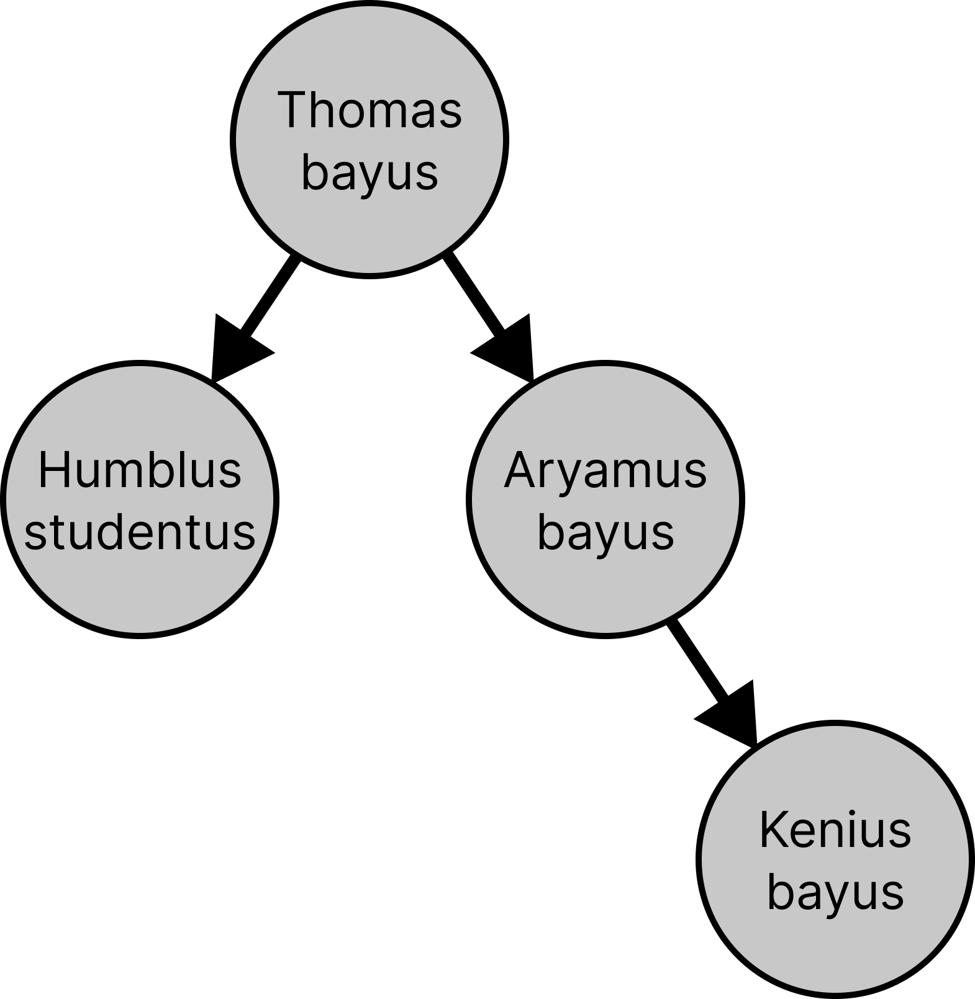

We've created a LaTeX template here for you to use that contains the prompts for each question.
Like previous assignments, we will use uv to setup the homework environment quickly.
Please refer to the official uv installation documentation for the most up-to-date installation instructions for your platform.
Create and activate a virtual environment with the required dependencies:
# Install uv once curl -LsSf https://astral.sh/uv/install.sh | sh # Optional: `uv` binary by default goes to `$HOME/.local/bin` on Linux/macOS, # so you may need to add it to your PATH (uv may have done this for you): export PATH="$HOME/.local/bin:$PATH"
# Install uv once powershell -ExecutionPolicy ByPass -c "irm https://astral.sh/uv/install.ps1 | iex"
# Download the homework zip and unzip into a folder # In your hw directory uv init . # Initialize project (creates pyproject.toml) uv python pin 3.12 # Pin Python version uv venv # Create default virtual environment uv pip install -r requirements.txt # Add dependencies uv run grader.py # Run the local grader (using the default venv) # To use the `python` command inside this project, # activate the (default) virtual environment: source .venv/bin/activate
If you cannot run the assignment on your laptop or need additional computing resources, Stanford provides FarmShare, a community computing environment for coursework and unsponsored research. Please follow the instructions at https://docs.farmshare.stanford.edu/ to get started with the computing environment.
Let's consider a simple scenario which we can model using a Bayesian network. You are walking to CS221 lecture and, on the way, you notice the grass on the Stanford Oval is wet. You reason that this could be because either it rained (rare in beautiful and sunny Palo Alto), or the sprinklers were on. Letting your mind wander from the lecture, you decide to sit down and figure out what happened here by applying your knowledge of Bayesian networks.
| $\text{Rain}$ | $\text{Sprinkler}$ | $p(\text{WetGrass} \mid \text{Rain}, \text{Sprinkler})$ |
| True | True | $0.9$ |
| True | False | $0.8$ |
| False | True | $0.7$ |
| False | False | $0.0$ |

You got distracted while examining that luscious green grass in the Stanford Oval, and you somehow wandered into the Gilbert Biological Sciences Building. As you realize where you are, you overhear some biologists discussing the genome of a new species they've discovered, provisionally given the scientific name Kenius bayus.
(As you remember from high school biology, the genome of a living thing is encoded in DNA, which is a long chain of nucleotides. Each nucleotide can be one of four organic molecules: A, C, T, or G.)
Assume a simplified model of biology where each descendant mutates the gene of its ancestor with a probability of mutation_rate, with a uniform distribution over the other three nucleotides when mutating. The mutation process is independent for each nucleotide.
For example, if we set mutation_rate = 0.1, then the local conditional probability table for $p(\text{HumblusStudentus} \mid \text{ThomasBayus})$ would be:
| $\text{ThomasBayus}$ | $p(\text{HS} = \text{A} \mid \text{TB})$ | $p(\text{HS} = \text{C} \mid \text{TB})$ | $p(\text{HS} = \text{T} \mid \text{TB})$ | $p(\text{HS} = \text{G} \mid \text{TB})$ |
| $\text{A}$ | $0.9$ | $0.03333$ | $0.03333$ | $0.03333$ |
| $\text{C}$ | $0.03333$ | $0.9$ | $0.03333$ | $0.03333$ |
| $\text{T}$ | $0.03333$ | $0.03333$ | $0.9$ | $0.03333$ |
| $\text{G}$ | $0.03333$ | $0.03333$ | $0.03333$ | $0.9$ |
The biologists are trying to figure out the probability of Kenius bayus's genome resulting from a series of mutations from its ancestor, Thomas bayus. You realise you could help these poor biologists, who never took CS 221, by modelling the mutation process with Bayesian networks!
BayesianNetwork class and the BayesianNode class defined in util.py.
An implementation of the initialize_phylogenetic_tree function in submission.py, which takes in a mutation_rate and returns a BayesianNetwork object representing the phylogenetic tree with the conditional probability tables being determined by the mutation rate.
We provide code for varying the genome_length parameter; you only need to define each node and its domain, parents, and conditional probability table.
Understanding the shape of the conditional probability table (CPT): When you create a BayesianNode, the last dimension of its conditional probability table will correspond to that node's domain, and every preceding dimension will match the size of each parent's domain (in parent order). For example, a node with two parents whose domains are length 4 and a child domain of length 4 needs a CPT of shape (4, 4, 4).
By default, the BayesianNode constructor will create a uniform distribution over the domain, but for some problems you may need to set the CPTs to a different distribution.
For later problems: Remember to read and understand the member functions of the BayesianNode class in util.py, particularly get_probability, parent_assignment_indices, and iter_parent_assignments.
Also, each BayesianNetwork has a batch_size parameter, which sets the size of a special batch axis for the nodes without parents. Your code may have to handle such nodes as a special case. This batch axis is used to sample sequences of independent observations (e.g. perhaps a DNA sequence...). By default, the batch_size is 1, but for some problems you may need to set it to a different value.
BayesianNetwork class and implement the function forward_sampling. This function should sample a single observation from the joint probability distribution of the given Bayesian network.
forward_sampling function in submission.py. You should use the given ordering of variables in self.order and sample from each one in order, using its conditional probability distribution and the values of its parents (which you should have already sampled). Each variable is represented by a BayesianNode object. Your solution should explicitly handle varying sequence lengths by using the network.batch_size parameter.
compute_joint_probability, which computes the joint probability of a given set of assignments to the variables in the Bayesian network.
compute_joint_probability function in submission.py. Your solution should explicitly handle varying sequence lengths by using the network.batch_size parameter.
test_forward_sampling, which will initialize the network with mutation_rate = 0.1 and genome_length = 10, and then run the forward_sampling function once on this network.
Fill out the table below with the complete genomes you observed for each species.
| Species | Genome |
| Thomas bayus | |
| Humblus studentus | |
| Aryamus bayus | |
| Kenius bayus |
rejection_sampling, which takes in a setting for Kenius bayus's gene (as a list of nucleotide strings, e.g. ['A', 'A', 'A', 'A']) along with the number of samples as an argument.
rejection_sampling function in submission.py. Your implementation should directly call the forward_sampling function you implemented in part (b). As before, your solution should explicitly handle the sequence length dimension by using the network.batch_size parameter.
gibbs_sampling function, which takes in a dictionary with settings for the evidence variables along with number of iterations. We have implemented the initial assignment for you.
gibbs_sampling function in submission.py.
rejection_sampling and gibbs_sampling, estimate $\mathbb{P}(\text{ThomasBayus} = \text{AAAC} \mid \text{KeniusBayus} = \text{AAAA})$, using the provided benchmarking function test_gibbs_vs_rejection. Fill out the table below with the results.
| Method | Steps/Iterations | Estimated Posterior |
| Rejection sampling | 100 | |
| Rejection sampling | 10,000 | |
| Gibbs sampling | 100 | |
| Gibbs sampling | 10,000 | |
| Exact | — |
Later in life, you're a data engineer managing a team of human annotators. Your data consists of labels indicating whether a given conversation between an LLM and a human was good or bad.
But you've run into a problem: your annotators can't seem to perfectly agree on their ratings, no matter how careful you are in your instructions! You vaguely remember something about Bayesian networks from CS221, so you decide to use them to help you assess annotator quality.
For this problem, we'll assume you have ground-truth labels for each data point. (In the real world, this will not be the case!)
| $Y$ | $p(A_1 = \text{good} \mid Y)$ | $p(A_1 = \text{bad} \mid Y)$ |
| $\text{good}$ | ||
| $\text{bad}$ |
| $Y$ | $p(A_1 = \text{good} \mid Y)$ | $p(A_1 = \text{bad} \mid Y)$ |
| $\text{good}$ | ||
| $\text{bad}$ |
bayesian_network_for_annotators(num_annotators, dataset_size), which returns the Bayesian network used for the remaining parts of this problem set. Your network should contain a latent Y node for the labels and one annotator node per annotator (e.g. A_0, A_1, A_2; 0-indexed), all sharing the same domain ['good', 'bad'].
mle_estimate, which takes in a BayesianNetwork and a list of observations and returns a new BayesianNetwork with the parameters estimated by MLE.
You will have to support Laplace smoothing using the parameter lambda_param.
mle_estimate function in submission.py.
You should first implement the helper function accumulate_assignment to accumulate the counts for each assignment. You should also use the provided helper functions init_zero_conditional_probability_tables and normalize_counts where applicable; you don't need to implement them.
annotations.csv with data from 3 annotators on 100 data points. Note that this dataset contains ground-truth labels for each data point. Read in the dataset, initialise the correct BayesianNetwork structure for modelling this problem, and use mle_estimate to learn its parameters.
mle_estimate_for_annotators, which takes in a list of observations and returns a new BayesianNetwork object with the parameters estimated by MLE.
plot_annotator_cpts. Which annotator seems to be the least trustworthy, and why?
Your real dataset doesn't actually have ground-truth labels. You thus want to both model the annotator noise as well as estimate the ground-truth labels.
You must now use the Expectation Maximization (EM) algorithm. Implement the algorithm and analyze the results on the dataset.
e_step(BayesianNetwork, data) which creates a dataset of fully-observed observations along with their normalized weights $q(h)$. (You should be able to use functions you implemented earlier as subroutines.)
e_step function in submission.py. We expect you to use the helper functions we've provided as well as your own implementations of compute_joint_probability and accumulate_assignment.
Tip: you should normalize the weights for each sample in the dataset independently, e.g. the weights for all possible labels for sample0 should sum to $1$.
m_step(BayesianNetwork, data) which takes in the dataset from the e_step function and updates the parameters of the Bayesian network using maximum likelihood estimation.
m_step function in submission.py. Your code should use your earlier implementations of accumulate_assignment and the provided init_zero_conditional_probability_tables and normalize_counts.
em_learn(BayesianNetwork, data, num_iterations) which runs the EM algorithm for a given number of iterations.
em_learn function in submission.py.
test_em_learn to train the model for 100 iterations. Plot the conditional probability tables for each of the annotators and the labels using the functions plot_annotator_cpts and plot_label_cpt. Show bot resulting plots.
Submission is done on Gradescope.
Written: When submitting the written parts, make sure to select all the pages
that contain part of your answer for that problem, or else you will not get credit.
To double check after submission, you can click on each problem link on the right side, and it should show
the pages that are selected for that problem.
Programming: After you submit, the autograder will take a few minutes to run. Check back after
it runs to make sure that your submission succeeded. If your autograder crashes, you will receive a 0 on the
programming part of the assignment. Note: the only file to be submitted to Gradescope is submission.py.
More details can be found in the Submission section on the course website.